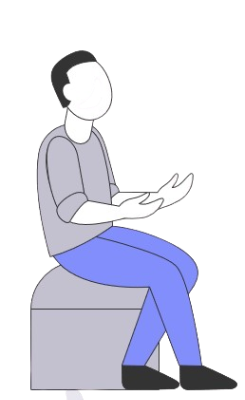

Bayu, mahasiswa Teknik Kimia yang juga bekerja paruh waktu, mulai lelah dengan rutinitasnya yang padat. Dengan saldo saat ini hanya Rp1 juta, ia merasa terjebak: tidak bekerja berarti tidak ada pemasukan.


1 Jt
saldonya
saat ini...
saat ini...
"Capek juga ya kerja terus, tapi kalau nggak kerja, nggak ada pemasukan. Gimana, ya?"
Ia pun berpikir: bagaimanakah cara mengatur keuangan lebih cerdas? Bayu ingin tetap menghasilkan tanpa selalu mengandalkan tenaga fisik, misalnya dengan investasi, usaha sampingan, atau mengembangkan keterampilan digital.